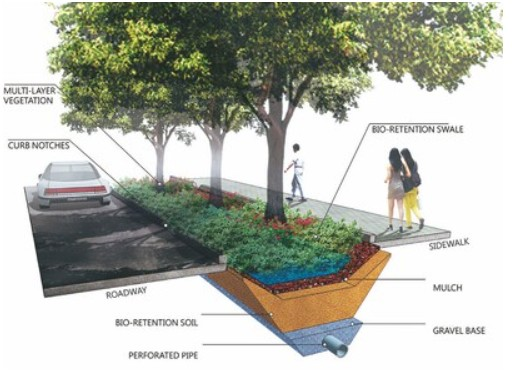

Sicurezza delle Reti e Infrastrutture Idriche
L'Obiettivo 6 dell'Agenda 2030 non riguarda solo la costruzione di acquedotti, ma anche la protezione delle infrastrutture digitali che li controllano. Oggi, la gestione dell'acqua si affida a sistemi informatici che devono essere protetti da attacchi hacker per evitare sabotaggi che potrebbero alterare la composizione chimica dell'acqua o interromperne l'erogazione alla popolazione.
La sicurezza informatica garantisce che i dati inviati dai sensori IoT, che monitorano la qualità e rilevano le perdite, siano integri e non manipolati. L'utilizzo di tecnologie avanzate come la virtualizzazione e le "Snapshot" permette di ripristinare i servizi idrici in pochi minuti in caso di attacchi ransomware, minimizzando i disagi per i cittadini.
La sicurezza dell'acqua è un pilastro della cittadinanza digitale: proteggere i dati significa proteggere una risorsa vitale.
Città Spugna: Rispondere alla Crisi Climatica
Il modello delle "Sponge Cities" (Città spugna) è una soluzione urbanistica innovativa progettata per assorbire la massima quantità di acqua piovana. Invece di incanalare l'acqua direttamente nei fognoli, queste città utilizzano infrastrutture che agiscono come una spugna, immagazzinando l'acqua in vasche sotterranee.
Questo sistema previene le alluvioni urbane e crea riserve idriche preziose che possono essere riutilizzate per l'irrigazione o per usi domestici durante i periodi di siccità. È un approccio nato in Cina nel 2014 che si sta diffondendo in tutto il mondo per la sua efficacia e scalabilità.

Dal Gabinetto al Rubinetto: Il Riciclo Totale
Una delle frontiere più avanzate dell'economia circolare è il progetto "Toilet-to-Tap". Attraverso processi di purificazione estrema, come l'osmosi inversa e il trattamento con luce ultravioletta (UV), le acque reflue vengono trasformate in acqua potabile di altissima qualità.
Città come Singapore e San Diego stanno già investendo in queste tecnologie. Sebbene esista un iniziale "fattore disgusto" da parte del pubblico, la scienza dimostra che l'acqua ottenuta è sicura e rappresenta una risorsa infinita per combattere la carenza idrica globale.

Soluzioni e Proposte Tecniche
Per una gestione moderna e sicura delle risorse idriche, il nostro gruppo propone l'adozione delle seguenti misure di sicurezza informatica:
| Tecnologia | Funzione |
|---|---|
| Tunneling VPN | Cripta la connessione dei tecnici che controllano le pompe da remoto. |
| Architettura DMZ | Separa i server pubblici dell'azienda dai sistemi critici di controllo. |
| Autenticazione MFA | Richiede una doppia verifica per ogni comando critico sulla rete. |
| Accounting | Registra ogni azione sul sistema per individuare errori o manomissioni. |
Monitoraggio Intelligente
Le Smart Water Grids utilizzano sensori protetti per monitorare costantemente la pressione e la qualità del flusso idrico, riducendo gli sprechi e garantendo che ogni cittadino abbia accesso a un'acqua sicura e controllata in tempo reale.